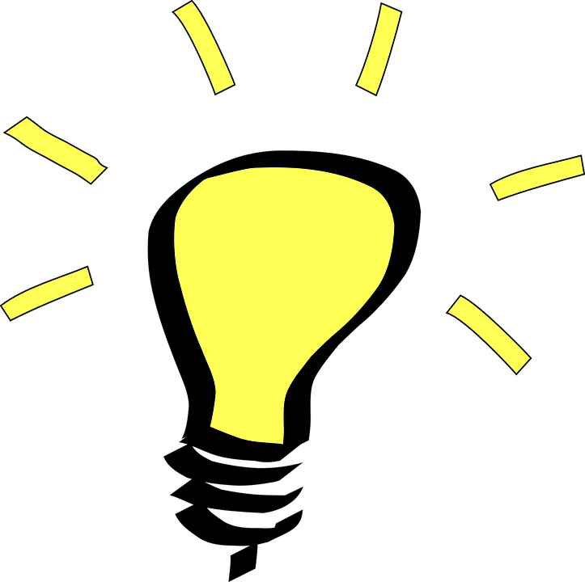
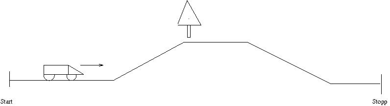
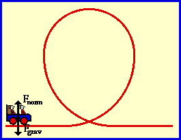
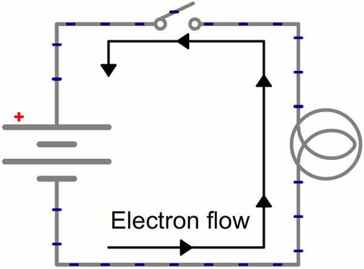
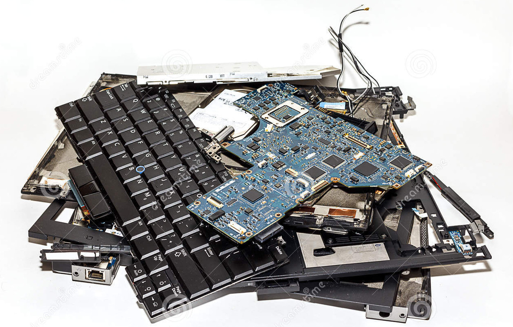
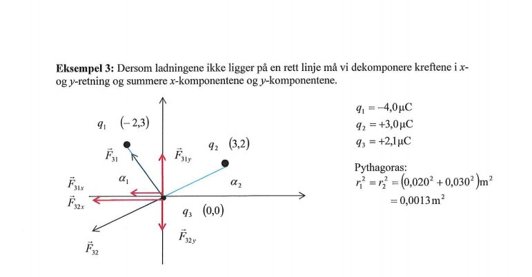
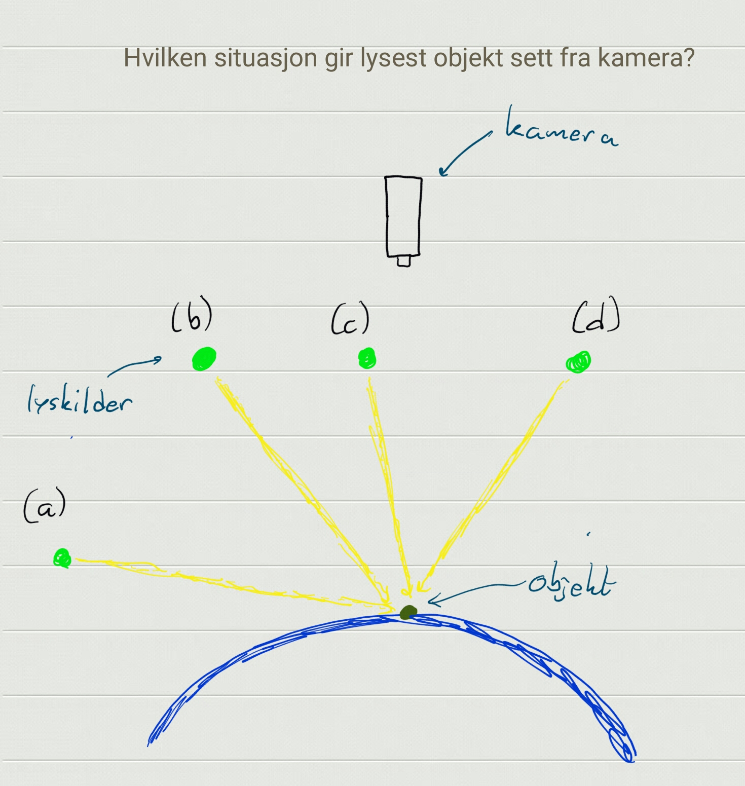
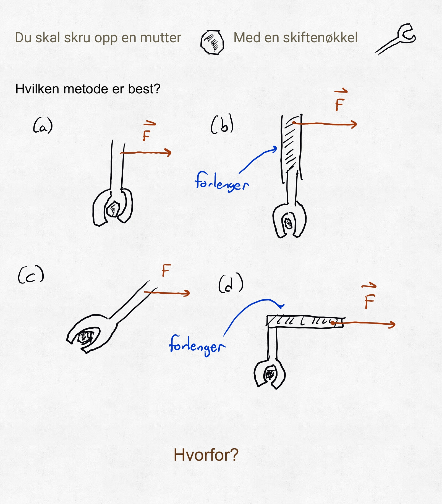

MAT100 for ELK og KOM
Uke 1
21.08.2017
Alexander Lundervold
institutt for data- og realfag
Team
Alexander og Kyrre
Studentassistenter:
Christoffer Grindheim, Ngoc Khiem Doan, Ramona Mork
Noen ord om hva jeg arbeider med
For å forklare min tilnærming til MAT100
Bakgrunn fra matematikk (doktorgrad i numerisk analyse).
Arbeider med maskinlæring
"Se", "høre", "lese", "forstå", ...
Hva har dette med MAT100 å gjøre? Stay tuned...
...rettet mot medisin
Praktisk info
- Lærebøker: Adams Calculus (og Lay Linear Algebra)
- Forelesninger: Mandager og onsdager.
- Øvingstimer: ELK på onsdager 10.15–12, KOM på fredager 13.15–15
- Obligatoriske øvinger:
Fire stykk. Må gjennomføres for å få ta eksamen.
Deler av øvingene er elektroniske.
Se kursets itslearning-side.
Kjedelig, vanskelig, irrelevant...
Interessant og kjempenyttig!
Introduksjon
ADVARSEL:
dette blir en virvelvind-tur; ikke meningen å forstå alt nå.
Eksemplene vil gi mer mening i løpet av kurset.
MAT100 og MAT106 omhandler KALKULUS, dvs. forandring og forhold mellom funksjoner, og LINEÆR ALGEBRA
Enkelt eksempel: Distanse og fart
- Gitt hvor bilen er i ethvert tidspunkt, hva er farten?
- Gitt farten, hvor er bilen etter en viss tid?
Smakebit:
Fysiske krefter

Mange krefter virker på objektet: Sentripetal, gravitasjon, drag, ... Beskrives med vektorer.
Oppførselen til fysiske objekter beskrives med derivasjon og integrasjon.
Fysikken er en rik kilde til problemstillinger. Naturlige og menneskeskapte.
Smakebit:
Maxwells ligninger i elektromagnetisme
| Gauss' lov | $\nabla \cdot \mathbf{E} = \frac{\rho}{\epsilon_0}$ |
| Gauss' lov for magnetisme | $\nabla \cdot \mathbf{B}$ |
| Maxwell-Faraday-ligningen | $\nabla \times \mathbf{E} = -\frac{\partial \mathbf{B}}{\partial t}$ |
| Ampères lov | $\nabla \times \mathbf{B} = \mu_0 \left(\mathbf{J} + \epsilon_0 \frac{\partial \mathbf{E}}{\partial t}\right)$ |
Vektorer, derivasjon, differensialligninger
Skal en forstå naturlovene må en forstå kalkulusSmakebit:
Strøm: endringsrate av ladning. Dvs. den deriverte.
Kapasitet: integrer for å finne kapasitet til batteri
Smakebit:
Kretslære (ELE100)

Smakebit:

Hvilke dimensjoner bør en sylindrisk beholder ha for å minimere materialkostnaden?
Optimeringsproblem
Slike dukker opp overalt!
Smakebit:
Hvor varm er kaffen etter 20 minutt?

Differensialligninger
Språket naturlover er formulert med!
Smakebit:
Skal bruke sinus og kosinus til å splitte opp signaler
Signalbehandling


Smakebit:
Kommunikasjon og signalbehandling

Derivasjon!
Den deriverte peker i retningen der funksjonen øker mest


Trenger
funksjoner, grenser, derivasjon, integrasjon, vektorer, differensialligninger, ...
Hvorfor studere kalkulus?
- Danner en del av grunnlaget for elektroingeniørfaget
→ et viktig verktøy - Skjerper logisk sans, samt evnen til problemløsing
→ godt for hjernen - Kalkulus er og har vært en sentral komponent i mange beskrivelser og modeller av fenomener – naturlige og menneskeskapte. Uten kalkulus, intet moderne samfunn!
→ bra for dannelsen
I dag
Hva er en vektor?
MAT100 for ELK og KOM
Uke 1
23.08.2017
I dag
Fortsetter på vektorregningen
- Skalarproduktet. Hva er det og hva brukes det til?
- Litt om vektorproduktet (kryss-produktet)
Interaktiv animasjon
Projeksjon av vektorer
Tre ladninger plassert på en flate
{kind=link}
Blir løst i ELE100
Vektorproduktet
| Dreiemoment | Magnetfelt |

|
$\vec{F} = q\vec{v} \times \vec{B}$ |
|---|
Quiz 1
{kind=link}
Hvordan??
Kryssprodukt og skalarprodukt!
https://threejs.org/examples/#webgl_lights_physical
Grafikk er gjenomsyret av lineær algebra (MAT106)
Quiz 1
Quiz 2
{kind=link}
Vektorproduktet
Lengde og retning:
Eksamensoppgave
Fra MAT100-eksamen, høsten 2014